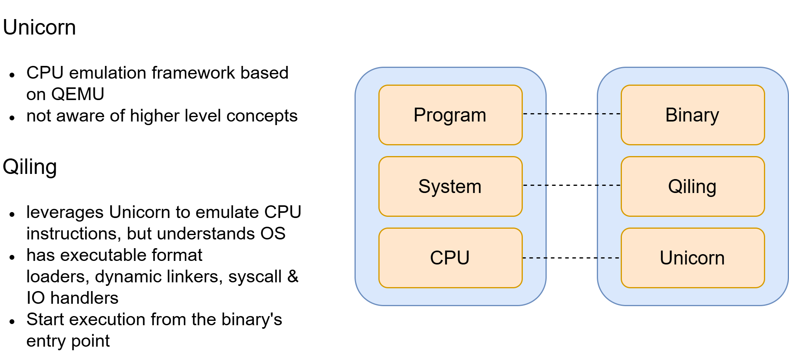
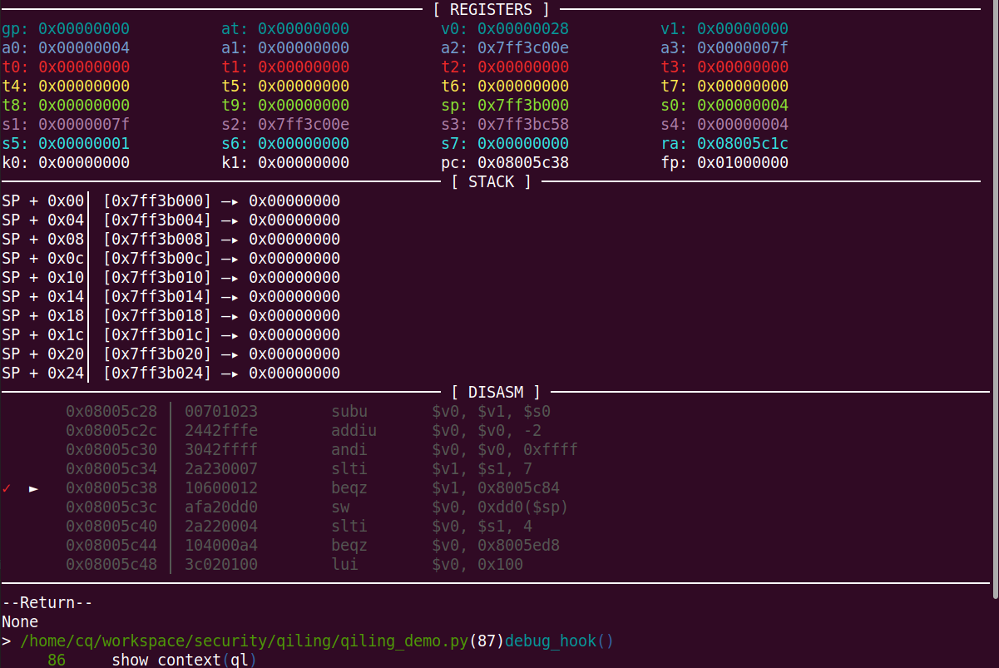
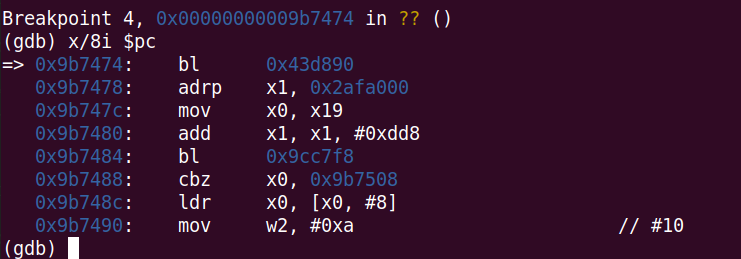

前言 在对嵌入式设备进行安全研究时，经常需要对目标设备固件或单个程序进行仿真，以便进行调试分析或漏洞验证。目前常见的几种仿真方法包括使用qemu system mode进行全系统仿真、使用qemu user mode进行单个程序仿真，以及使用Unicorn进行任意代码片段仿真。本文将结合qemu user mode单个程序仿真和Unicorn代码片段仿真这两种方法的优势，提出一种称为局部仿真(partial emulation)的方法，并以两个实际案例为例，对该方法进行介绍。
固件仿真 固件仿真是指通过软件模拟嵌入式设备的硬件环境，使固件能够在虚拟环境中运行。借助固件仿真，安全研究人员可以在没有真实设备的情况下对设备固件进行分析和研究，从而发现潜在的安全漏洞。目前，常见的几种仿真方法如下。
全系统仿真 ：使用qemu system mode来模拟整个操作系统和硬件环境，包括CPU、内存、外设等，从而运行完整的固件镜像。这种方式能够提供与实际设备高度相似的运行环境，适用于对整个系统进行分析和测试。✅优点：支持模拟整个硬件环境，能够运行完整的操作系统和固件，更接近真实环境。 ❌️缺点：外设仿真不完善，有些设备特定的外设无法完全模拟，导致固件无法正常运行，因而需要对QEMU或固件进行定制化修改。 用户态仿真 ：使用qemu user mode来运行固件中单个二进制程序，与全系统仿真不同，这种方式不需要模拟整个操作系统，而是让目标架构的二进制文件在宿主机上直接运行。这种方式适用于对单个程序或库进行测试和分析。✅优点：简单易用，无需配置复杂的硬件环境。 ❌️缺点：无法模拟完整的系统环境，某些系统调用或硬件交互可能无法支持；无法仿真内核模块或设备驱动程序。 代码片段仿真 ：使用Unicorn来对任意代码片段进行仿真，通常用于分析单个函数或代码块的行为。✅优点：灵活性高，可以对任意代码片段进行仿真，支持自定义内存映射、寄存器状态和hook函数，适合定制化分析。 ❌️缺点：无法模拟完整的系统或程序运行环境；针对较复杂的程序，需要手动设置内存映射和寄存器映射等，以及解决系统函数调用问题，配置过程较为复杂。 在实际进行安全研究的过程中，通常我们关心的是某个提供服务的二进制程序，采用用户态仿真这种方式更多一点。但在某些情形下，比如目标二进制程序很复杂(例如飞塔防火墙设备中的/bin/init)，或者目标文件是内核模块或者Bootloader，用户态仿真这种方式可能无法使用。而如果我们关心的仅是目标程序中提供某些特定功能的模块或函数，则可以借鉴代码片段仿真方式的优点，采用局部仿真(partial emulation)的方式，即仅对目标程序中提供某些特定功能的模块或函数代码进行仿真，而不用仿真整个目标二进制程序，来完成分析和调试的目的。
局部仿真 局部仿真(partial emulation)是指仅对目标程序中提供某些特定功能的模块或函数代码进行仿真，这种方式适用于仿真那些功能相对独立的函数代码，即不依赖复杂的运行时上下文或复杂的结构体，比如用于加解密的函数、负责解析协议数据包的函数等。虽然使用Unicorn代码片段仿真的方式也能实现局部仿真，但考虑到某些情形下其配置相对复杂，同时Qiling框架底层是基于Unicorn框架，故这里主要介绍使用Qiling框架或QEMU(qemu user mode) + GDB组合这两种方式来进行局部仿真。
Qiling Qiling框架简介 Qiling 是一个开源的、可模拟执行多种架构和平台的二进制仿真框架，其本质是在沙箱环境内模拟执行二进制文件，在模拟执行的基础上提供了统一的分析API，这些API包括包括插桩分析、系统调用、API hook和快照等。Qiling框架底层是基于Unicorn，在其基础上抽象出了”操作系统”层，Unicorn是一个CPU模拟器，而Qiling则相当于一个操作系统模拟器。

以ELF可执行文件为例，使用Qiling框架进行二进制仿真时，通常是从可执行文件的入口即main()函数开始运行 (实际上底层是先从loader开始运行，由其加载和解析ELF可执行文件，以及完成动态链接库映射等工作)，示例代码如下。
1 2 3 4 5 6 7 8 9 10 11 import syssys.path.append(".." ) from qiling import Qilingfrom qiling.const import QL_VERBOSEif __name__ == "__main__" : ql = Qiling([r'rootfs/arm_linux/bin/arm_hello' ], r'rootfs/arm_linux' , verbose=QL_VERBOSE.DEBUG) ql.run()
实际上，该方式与使用qemu user mode来运行单个二进制程序的方式是一样的，故不是本文讨论的重点。在Qiling官方的示例代码中，包含一个我之前提交过的仿真运行uboot.bin文件的示例 ，相关代码如下。其主要思想是在加载和映射完uboot.bin文件后，直接跳转到指定地址处运行，即只仿真特定的函数代码片段，这种方式就属于局部仿真(partial emulation)。当然，由于这里的uboot.bin是一个静态链接文件，不涉及到动态链接库的映射以及系统函数调用等，所以也可以直接使用Unicorn框架来完成代码片段仿真。而如果待仿真的目标程序是一个动态链接的ELF可执行文件，使用Qiling框架进行仿真的优势会更明显。
1 2 3 4 5 6 7 8 9 10 11 12 13 14 15 16 17 18 19 20 21 22 23 24 25 26 27 28 29 30 31 32 33 34 def get_kaimendaji_password (): // ... def partial_run_init (ql: Qiling ): ql.arch.regs.arch_sp -= 0x30 arg0_ptr = ql.arch.regs.arch_sp ql.mem.write(arg0_ptr, b"kaimendaji" ) ql.arch.regs.arch_sp -= 0x10 arg1_ptr = ql.arch.regs.arch_sp ql.mem.write(arg1_ptr, b"000000" ) ql.arch.regs.arch_sp -= 0x20 argv_ptr = ql.arch.regs.arch_sp ql.mem.write_ptr(argv_ptr, arg0_ptr) ql.mem.write_ptr(argv_ptr + ql.arch.pointersize, arg1_ptr) ql.arch.regs.r2 = 2 ql.arch.regs.r3 = argv_ptr with open ("../examples/rootfs/blob/u-boot.bin.img" , "rb" ) as f: uboot_code = f.read() ql = Qiling(code=uboot_code[0x40 :], archtype=QL_ARCH.ARM, ostype=QL_OS.BLOB, profile="uboot_bin.ql" , verbose=QL_VERBOSE.OFF) image_base_addr = ql.loader.load_address ql.hook_address(my_getenv, image_base_addr + 0x13AC0 ) ql.hook_address(get_password, image_base_addr + 0x48634 ) partial_run_init(ql) ql.run(image_base_addr + 0x486B4 , image_base_addr + 0x48718 )
下面将结合一个实际的案例进一步介绍使用Qiling框架进行局部仿真这种方式。
思科220系列交换机l2g_lldp.ko模块仿真 我之前进行过LCDPwnLCDPwn是存在于链路层设备发现协议CDP和LLDP中的一系列漏洞，在对不同厂商的设备中对应协议的实现代码进行分析时，发现部分设备中对应协议代码的实现在内核模块l2k_lldp.ko中，为了进行调试和确认，我采用局部仿真的方式，利用Qiling框架对该内核模块进行仿真。
Qiling框架集成了DemigodPR
以思科220系列交换机设备为例，分析的固件版本为Sx220-R1.2.1.2.binLLDP协议对应的实现代码在驱动模块modsqfs/lib/modules/2.6.19/kernel/net/switch/proto/lldp/l2g_lldp.ko中。在该模块中，负责对LLDP协议数据包进行解析的函数为lldp_pkt_rx(), 相关代码如下。其中，在(1)处对协议数据包头部进行简单的校验后，正常情况下程序流程会执行到(2)处，在(2)处的while循环中对数据包进行解析和处理。进一步地，在while循环中的(3)处，会基于数据包中的tlv_type字段，执行不同的分支处理逻辑。
1 2 3 4 5 6 7 8 9 10 11 12 13 14 15 16 17 18 19 20 21 22 23 24 25 26 27 28 29 30 31 32 33 34 35 36 37 38 39 40 41 42 43 44 45 46 47 48 49 50 51 52 53 54 55 56 57 58 59 60 61 62 63 64 65 66 67 68 69 int lldp_pkt_rx (int a1) if ( a1 ) { if ( dword_B89E98 == 1 ) { v7 = *(_DWORD *)(a1 + 40 ); v8 = *(_DWORD *)(a1 + 4 ); v9 = v5 - 0xC ; v10 = (unsigned __int8 *)(v8 + 0xC ); v13 = &dword_B896A8[7 * v3]; v14 = v13[5 ] + 1 ; v15 = (unsigned __int16)(v9 - 2 ); remain_tlv_len = v15; tlv_ptr = v10 + 2 ; v13[5 ] = v14; if ( v15 ) { while ( 1 ) { memset (v135, 0 , sizeof (v135)); v17 = (*tlv_ptr << 8 ) | tlv_ptr[1 ]; tlv_length = _byteswap_ushort(*(_WORD *)tlv_ptr) & 0x1FF ; HIWORD(v135[2 ]) = _byteswap_ushort(*(_WORD *)tlv_ptr) & 0x1FF ; HIBYTE(v135[0 ]) = v17 >> 9 ; tlv_type = v17 >> 9 ; if ( check_tlv_len(remain_tlv_len, v17 & 0x1FF , (int )tlv_ptr, HIBYTE(v135[0 ])) ) { } remain_tlv_len = (unsigned __int16)(remain_tlv_len - tlv_length - 2 ); if ( tlv_type >= 7 ) { if ( tlv_type == 8 ) { LABEL_61: goto LABEL_151; } if ( tlv_type < 8 ) { goto LABEL_152; } tlv_ptr += 2 ; org_unique_code = (*tlv_ptr << 16 ) | (tlv_ptr[1 ] << 8 ) | tlv_ptr[2 ]; if ( org_unique_code == 0x12BB ) { goto LABEL_151; } if ( org_unique_code >= 0x12BC ) { } else if ( org_unique_code == 0x120F ) { } else { tlv_ptr += HIWORD(v135[2 ]); } } else if ( tlv_type >= 4 ) { } else { } LABEL_152: if ( !(v29 | v148) && tlvCounter < 0x201 ) { ++tlvCounter; if ( remain_tlv_len ) continue ; }
基于上述分析，整个过程主要是对接收的数据包进行解析和处理，功能相对独立，符合局部仿真方式的适用条件。仿真的大体思路如下：
以lldp_pkt_rx()为入口点，初始化相关的函数参数，直接从该函数开始运行； 其他：根据程序解引用数据包指针的方式，在初始化时申请缓冲区，并使用对应的数据包进行填充，然后对相关结构体中的字段进行设置； 对于代码中使用到的一些全局变量或结构体等，进行相应的初始化设置(按需设置，使用到哪个字段便设置哪个字段即可)，以及对必要的函数进行相关hook等，保证能顺利仿真。 针对这里的情形，由于在lldp_pkt_rx()函数开始处调用了其他模块中的函数，以及使用了部分全局变量/结构体，简单起见，在进行适当的初始化后，可以直接从(2)处开始仿真运行。
使用Qiling框架进行局部仿真的代码如下，其中：
ql.run(start, end)：由于内核模块与ELF可执行程序不同，在完成加载和映射后，直接从指定的地址处开始执行；partial_run_init(ql)：进行相关的初始化，包括填充lldp数据包等。1 2 3 4 5 6 7 8 9 10 11 12 13 14 15 16 17 18 19 20 21 22 23 24 25 26 27 28 29 30 31 32 33 34 35 36 def cisco_switch_220 (): def partial_run_init (ql, *args, **kwargs ): ql.arch.regs.arch_sp -= 0x1000 lldp_pkt_buf = "<lldp packet>" lldp_pkt_buf_ptr = ql.arch.regs.arch_sp ql.mem.write(lldp_pkt_buf_ptr, lldp_pkt_buf) lldp_payload_ptr = lldp_pkt_buf_ptr + 0xe ql.arch.regs.arch_sp -= 0x1000 osal_alloc_buf_size = 0xc34 osal_alloc_buf_ptr = ql.arch.regs.arch_sp + 0xdd8 - 0xdb8 ql.mem.write(osal_alloc_buf_ptr, b'\x00' * osal_alloc_buf_size) ql.arch.regs.s3 = osal_alloc_buf_ptr ql.log.info("[cq] osal_malloc: start %#x - end %#x" % (osal_alloc_buf_ptr, osal_alloc_buf_ptr + osal_alloc_buf_size)) ql.arch.regs.s2 = lldp_payload_ptr ql.arch.regs.a0 = len (lldp_pkt_buf) - 0xe ql.mem.write(ql.arch.regs.arch_sp + 0xdd8 - 0x8 , ql.pack(ql.arch.regs.a0)) rootfs_path = "/home/cq674350529/firmware/cisco/switch/220_series_smart_switches/.../cpio-root" bin_path = os.path.join(rootfs_path, "modsqfs/lib/modules/2.6.19/kernel/net/switch/proto/lldp/l2g_lldp.ko" ) ql = Qiling([bin_path], rootfs_path, console=True , verbose=QL_VERBOSE.DEBUG, multithread=False ) partial_run_init(ql) image_base = None for item in ql.mem.search(b"\x27\xBD\xFF\xE8\x3C\x04" , begin=0x0008000000 , end=0x008b8b000 ): image_base = item break start = image_base + 0x5B6C end = image_base + 0x68C4 ql.run(start, end)
效果如下，可以看到，已成功运行代码，并能进行调试和分析。

QEMU(qemu user mode) + GDB 正常情况下，如果使用Qiling框架能成功运行目标程序，进行分析和调试还是很方便的。但有时会遇到一些目标程序，使用Qiling框架仿真运行会报错(比如在loader运行阶段报错)，而QEMU工具相对更成熟，针对ELF可执行程序，可以考虑采用QEMU(qemu user mode) + GDB组合来进行局部仿真。下面以飞塔防火墙设备漏洞CVE-2024-23113为例对该方法进行介绍。
飞塔防火墙设备/bin/init程序仿真 CVE-2024-23113是存在于飞塔防火墙设备fgfmd模块中的一个格式化字符串漏洞，格式化字符串漏洞的利用比较简单，重点是需要知道用户可控输入在格式化字符串函数调用栈中的参数偏移量。对于某些型号的真实设备，在不太方便调试(比如无法获取到设备的shell，或者存在内核可信执行校验机制等)时，可借助局部仿真的方式来进行分析和调试。
以FGT_60F型号为例，分析的固件版本为7.0.12，对应的二进制程序为/bin/init。由于该程序很复杂，使用qemu user mode模式对整个程序进行仿真这种方式行不通。而在这个例子中，漏洞出现在对fgfm数据包进行解析和处理的过程中，功能相对独立，因此可以考虑只对这部分代码进行仿真，而无需仿真整个/bin/init程序。
在飞塔防火墙设备中，主要的功能模块都是符号链接到/bin/init程序。
漏洞的细节这里不再赘述，感兴趣地可参考网上相关文章 ，这里仅从仿真的角度进行分析。_session_read()函数用于接收和处理外部发送的数据包，相关代码如下。其中，在(1)处调用fgfm_sock_read()读取socket上的数据，在(2)处的while循环中对接收的数据包进行校验和处理。在while循环中的(3)处，根据数据包中的opcode字段，调用不同的handler函数，该漏洞与(4)处的fgfm_clt_handler()相关。
1 2 3 4 5 6 7 8 9 10 11 12 13 14 15 16 17 18 19 20 21 22 23 24 25 26 27 28 29 30 31 32 33 34 35 36 37 38 void __fastcall _session_read(__int64 a1){ v2 = fgfm_sock_read( *(__int64 **)(a1 + 0x180 ), (void *)(*(_QWORD *)(*(_QWORD *)(a1 + 0x170 ) + 16L L) + **(int **)(a1 + 0x170 )), *(_DWORD *)(*(_QWORD *)(a1 + 0x170 ) + 4L L) - **(_DWORD **)(a1 + 0x170 )); **(_DWORD **)(a1 + 0x170 ) += v2; v3 = *(_QWORD *)(a1 + 0x170 ); if ( v3 ) { while ( *(_DWORD *)v3 > 7u ) { v5 = *(unsigned int **)(v3 + 16 ); v6 = bswap32(v5[1 ]); if ( v6 <= 0 || (unsigned int )sub_9CCFC0(*(_QWORD *)(v3 + 16 )) ) { } v7 = *(int **)(a1 + 0x170 ); if ( !v7 || v6 > *v7 ) return ; opcode = *((unsigned __int8 *)v5 + 3 ); if ( opcode == 1 ) { sub_9DC9F8(v5); } else if ( opcode == 2 ) { sub_9BADD0(qword_489E9D0, a1, v5); } else if ( !*((_BYTE *)v5 + 3 ) ) { fgfm_clt_handler((_BYTE *)qword_489E9D0, a1, (__int64)v5); }
函数fgfm_clt_handler()的部分代码如下。其会在(5)处调用sub_9CC970()对数据包进行解析，之后在(6)处从函数表中获取对应的处理函数，在(7)处进行调用。
1 2 3 4 5 6 7 8 9 10 11 12 13 14 15 16 17 18 19 20 21 22 __int64 *__fastcall fgfm_clt_handler (_BYTE *a1, __int64 a2, __int64 a3) v4 = (const char *)(a3 + 8 ); v6 = sub_9CC970((const char *)(a3 + 8 ), *(_DWORD *)(a3 + 4 ) - 8 ); if ( v6 ) { v7 = v6; if ( v6[4 ] > 0 ) goto LABEL_3; v8 = *v6; if ( *v6 != 4 ) { v8 = *v7; if ( (unsigned int )*v7 > 6 ) return (__int64 *)sub_9CC558((__int64)v7); } LABEL_4: v9 = (void (__fastcall *)(_BYTE *, __int64, int *))*(&off_427CE88 + v8); if ( v9 ) v9(a1, a2, v7);
在(7)处，调用的与漏洞相关的函数为sub_9B7E68()，相关代码如下。其会根据fgfm数据包中request字段的内容，执行不同的处理逻辑。在某些情形下，程序会运行到(8)处，调用sub_9B7440()。
1 2 3 4 5 6 7 8 9 10 11 12 13 14 15 16 17 18 19 20 21 void __fastcall sub_9B7E68 (__int64 a1, __int64 a2, __int64 a3) value_by_key = get_value_by_key(a3, "request" ); v7 = value_by_key; if ( !v9 ) { v10 = **(const char ***)(a3 + 8 ); if ( !strcmp (v10, "200" ) ) { if ( v8 == 1 ) { if ( (*(_WORD *)(a2 + 0x84 ) & 0x100 ) == 0 ) { sub_9B7440(a2, a3); sub_9B5AE0(a1, a2); return ;
函数sub_9B7440()的部分代码如下。可以看到，在(9)处存在格式化字符串漏洞。
1 2 3 4 5 6 7 8 9 10 11 FILE *__fastcall sub_9B7440 (__int64 a1, __int64 a2) value_by_key = get_value_by_key(a2, "authip" ); if ( value_by_key || (value_by_key = get_value_by_key(a2, "fmg_fqdn" )) != 0 || (value_by_key = get_value_by_key(a2, "mgmtip" )) != 0 ) { snprintf ((char *)(a1 + 0xCC ), 0x7F uLL, *(const char **)(value_by_key + 8 )); }
根据上面的分析可知，整个过程也主要是对接收的数据包进行解析和处理，功能相对独立，符合局部仿真方式的适用条件。仿真的大体思路如下：
以_session_read()为入口点，初始化相关的函数参数，直接从该函数开始运行； 对fgfm_sock_read()进行hook，直接将对应的数据包写入到缓冲区中，并设置正确的数据包长度； 其他：对于代码中使用到的某些全局变量或结构体如nCfg_debug_zone，也需要在初始化时进行适当设置 (按需设置，使用到哪个字段便设置哪个字段即可)，保证能顺利仿真。 根据上述思路，这里先介绍下使用Qiling框架对ELF可执行程序进行局部仿真的代码框架，如下。其中：
ql.run()：因为需要使用到动态链接库中的某些系统函数，所以需要先让loader完成准备工作，运行到main()入口；ql.hook_address(partial_run, 0x453BE0)：在main()入口处进行hook，将控制流劫持到_session_read()，同时初始化相关参数，为运行_session_read()做准备工作其他：根据具体的需求设置hook，比如这里hook对fgfm_sock_read()的调用，用于直接填充数据包等。 1 2 3 4 5 6 7 8 9 10 11 12 13 14 15 16 17 18 19 20 def fortigate_init(): def partial_run(ql): ql.arch.regs.arch_sp -= 0x1000 a1_strcut_ptr = ql.arch.regs.arch_sp # ... prepare arguments ql.arch.regs.x0 = a1_strcut_ptr ql.arch.regs.arch_pc = 0x9D6E30 # hijack control flow to _session_read() rootfs = "/home/cq674350529/firmware/FGT_60F_7.0.12/_rootfs" bin_path = os.path.join(rootfs, "bin/init") ql = Qiling([bin_path], rootfs, console=True, verbose=QL_VERBOSE.DEBUG) ql.hook_address(partial_run, 0x453BE0) # hook at main() ql.hook_address(hook_fgfm_sock_read, 0x9D6E5C) # hook the call to fgfm_sock_read() # ... ql.run()
上面只是一个示例，因为使用Qiling框架进行仿真会报错，故这里采用了QEMU(qemu user mode) + GDB组合。使用qemu user mode模式可以成功运行/bin/init程序，结合gdb调试 + gdb python扩展脚本，可以实现类似上面脚本的功能。通过gdb调试，可实现寄存器读写和内存地址读写等操作，结合gdb python脚本可实现自动化操作。
在gdbinit中设置相关断点，以及断点命中后自动执行gdb python脚本 1 2 3 4 5 6 7 8 9 10 11 12 13 14 15 16 17 18 19 20 21 22 23 # gdbinit example b *0x453BE0 commands silent source /home/cq674350529/gdb/fortigate_init_patch_FGT_60F_7012.py c end b *0x9D6E30 commands silent source /home/cq674350529/gdb/fortigate_init_patch_FGT_60F_7012.py c end b *0x9D6E5C commands silent source /home/cq674350529/gdb/fortigate_init_patch_FGT_60F_7012.py c end b *0x9B7474
编写gdb python脚本，实现在命中不同的断点后执行相关的操作逻辑 1 2 3 4 5 6 7 8 9 10 11 12 13 14 15 16 17 18 19 20 21 22 23 24 25 26 27 28 29 30 31 32 33 34 35 36 37 38 39 40 import gdb_utilsdef hijack_pc (value ): gdb_utils.set_reg_value("pc" , value) def init_args (): x0_ptr = 0x6000000 gdb_utils.set_reg_value("x0" , x0_ptr) gdb_utils.set_memory_int(x0_ptr + 0x188 , 1 , size=4 ) x0_ptr_offset_0x170_ptr = x0_ptr + 0x1000 gdb_utils.set_memory_int(x0_ptr + 0x170 , x0_ptr_offset_0x170_ptr, size=8 ) buf_ptr = x0_ptr_offset_0x170_ptr + 0x2000 gdb_utils.set_memory_int(x0_ptr_offset_0x170_ptr + 0x10 , buf_ptr, size=0x8 ) gdb_utils.set_memory_int(x0_ptr_offset_0x170_ptr, 0 , size=4 ) gdb_utils.set_memory_int(x0_ptr_offset_0x170_ptr + 4 , 0x4000 , size=4 ) gdb_utils.set_memory_int(0x84F3000 + 624 , x0_ptr + 0x7000 ) gdb_utils.set_memory_int(0x489E9D0 , x0_ptr-0x1000 ) def write_pkt (cur_addr ): buf_addr = gdb_utils.get_reg_value("x1" ) pkt_hex = "<fgfm packet>" gdb_utils.set_memory_string(buf_addr, pkt_hex) gdb_utils.set_reg_value("x0" , len (pkt_hex)) hijack_pc(cur_addr + 4 ) cur_addr = gdb_utils.get_reg_value("pc" ) if cur_addr == 0x453BE0 : hijack_pc(0x9D6E30 ) elif cur_addr == 0x9D6E30 : init_args() elif cur_addr == 0x9D6E5C : write_pkt(cur_addr)
使用qemu user mode模式进行仿真，利用gdb进行调试。 1 2 3 ~/FGT_60F_7.0.12/_rootfs$ sudo chroot . ./qemu-aarch64-static -g 12345 ./bin/init $ gdb-multiarch --nx --command =~/fg_gdbinit -q
效果如下，可以看到，已成功运行到调用snprintf()的地方。实际上，通过这种方式，可在仿真环境中完成对该漏洞的利用，并迁移到真实设备上，感兴趣的可自行尝试。

小结 本文提出了一种称为局部仿真(partial emulation)的方法，该方法适用于仿真那些功能相对独立的函数代码，即不依赖复杂的运行时上下文或复杂的结构体，比如用于加解密的函数、负责解析协议数据包的函数等，并以思科220系列交换机和飞塔防火墙设备为例，采用Qiling框架或QEMU(qemu user mode) + GDB组合，对该方法进行了介绍。相比于全系统仿真(qemu system mode)和用户态仿真(qemu user mode)这两种方式，在某些场景中，局部仿真(partial emulation)方式会更灵活，可满足对某些功能模块或函数进行调试分析的需求。